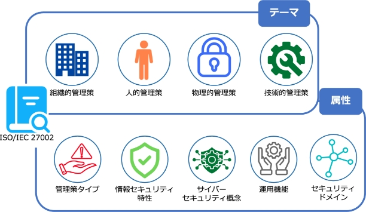

9-1-2. 管理策のテーマと属性
ISO/IEC 27002の箇条5～8に示される4種の管理策での分類（組織的・人的・物理的・技術的）を、テーマと呼びます。管理策の分類は様々な考え方がありますが、多くの組織に共通であると考えられる最低限の分類としてこの4つが採用されています。テーマとは別の視点で、より細かに管理策を見るのに際しては、属性という機能があります。各管理策に属性が付与されたことにより、検索性が向上し、管理策のフィルタリング、並び替え、提示がしやすくなりました。
管理策の属性には、他の組織や団体が発行するガイドラインなどにおける考え方を取り入れているものがあります。「サイバーセキュリティ概念」では、サイバーセキュリティフレームワークにおける、フレームワークコアの5つの機能分類がそのまま属性値となっています。また、「運用機能」の属性値は、2022年の改訂前におけるISO/IEC 27002の管理策の分類がもとになっています。
管理策の属性
属性値
関連するガイドライン等
管理策タイプ
予防、検知、是正
ー
サイバーセキュリティ概念
識別、防御、検知、対応、復旧
サイバーセキュリティフレームワーク
運用機能
ガバナンス、資産管理、情報保護、人的資源のセキュリティ、物理的セキュリティ、システムおよびネットワークセキュリティ、アプリケーションのセキュリティ、セキュリティを保った構成、識別情報およびアクセスの管理、脅威および脆弱性の管理、継続、供給者関係のセキュリティ、法および遵守、情報セキュリティ事象管理、情報セキュリティ保証
ISO/IEC 27002:2013
セキュリティドメイン
ガバナンスおよびエコシステム、保護、防御、対応力
ー
各テーマより管理策の例示（組織的/人的）
【組織的管理策】5.2 情報セキュリティの役割及び責任
管理策タイプ
#予防
情報セキュリティ特性
#機密性 #完全性 #可用性
サイバーセキュリティ概念
#識別
運用機能
#ガバナンス
セキュリティドメイン
#ガバナンス及びエコシステム #対応力
管理策
情報セキュリティの役割及び責任を、組織の要求に従って定め、割り当てることが望ましい。
目的
組織内における情報セキュリティの実施、運用及び管理のために、定義され、承認され、理解される構造を確立するため。
【人的管理策】6.8 情報セキュリティ事象の報告
管理策タイプ
#検知
情報セキュリティ特性
#機密性 #完全性 #可用性
サイバーセキュリティ概念
#検知
運用機能
#情報セキュリティ事象管理
セキュリティドメイン
#防御
管理策
組織は、要員が発見した又は疑いを持った情報セキュリティ事象を、適切な連絡経路を通して時機を失せずに報告するための仕組みを設けることが望ましい。
目的
要員が、特定可能な情報セキュリティ事象を時機を失せず、一貫性をもって効果的に報告することを支援するため。
（出典）MSQA「ISO/IEC 27002:2022 対応 情報セキュリティ管理策実践ガイド」を基に作成
各テーマより管理策の例示（物理的/技術的）
【物理的管理策】7.4 物理的セキュリティの監視
管理策タイプ
#予防 #検知
情報セキュリティ特性
#機密性 #完全性 #可用性
サイバーセキュリティ概念
#防御 #検知
運用機能
#物理的セキュリティ
セキュリティドメイン
#保護 #防御
管理策
施設は、認可されていない物理的アクセスについて継続的に監視することが望ましい。
目的
認可されていない物理的アクセスを検知し、抑止するため。
【技術的管理策】8.16 監視活動
管理策タイプ
#検知 #是正
情報セキュリティ特性
#機密性 #完全性 #可用性
サイバーセキュリティ概念
#検知 #対応
運用機能
#情報セキュリティ事象管理
セキュリティドメイン
#防御
管理策
情報セキュリティインシデントの可能性がある事象を評価するために、ネットワーク、システム及びアプリケーションについて異常な行動・動作がないか監視し、適切な処置を講じることが望ましい。
目的
異常な行動・動作及び潜在する情報セキュリティインシデントを検出するため。
（出典）MSQA「ISO/IEC 27002:2022 対応 情報セキュリティ管理策実践ガイド」を基に作成